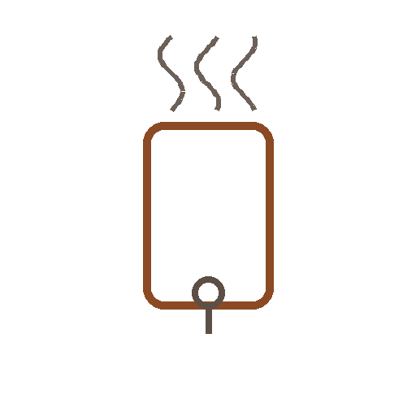

Filterkaffee-KlassikerFilterkaffee-Klassiker
Batch Brew Bürorunde
Für die ganze Runde.
⏱7 Min.
📶Einfach
☕6 Portionen
🫘Zutaten
- Kaffee, mittel gemahlen60 g
- Wasser1020 ml
📋Zubereitung
- 1Filter einlegen, Kaffee einfüllen.
- 2Wasser hinzufügen, Brühvorgang starten.
- 3Nach dem Durchlauf umrühren und servieren.
💡
Kaffee für dieses Rezept entdeckenLeNoKo Shop
→
Kaffee-Tipp
unsere Linzer Röstung bleibt auch in großer Menge gleichbleibend gut.